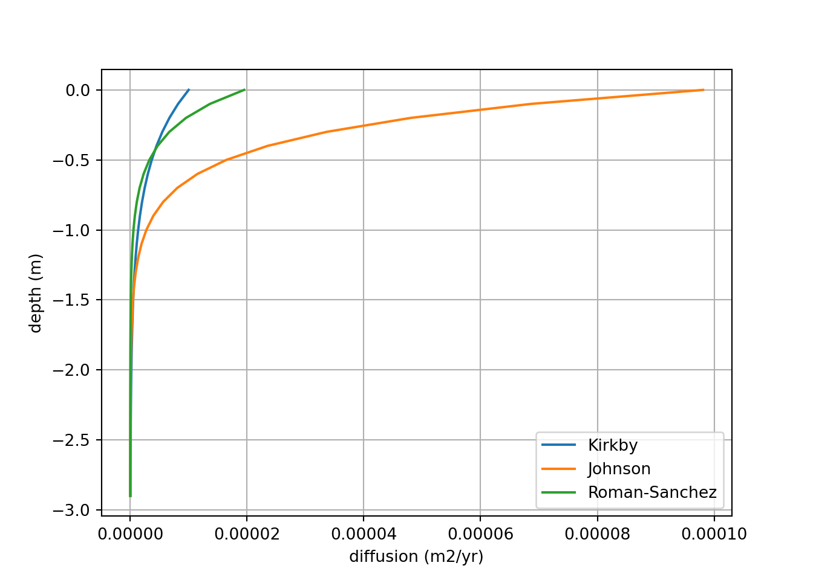

Section 8 Numerical Models
8.1 Transition / Justification
Conceptual models alone are valuable for describing a number of processes, as justified above. However, quantitative, numerical models are a more powerful tool for answering questions and making predictions, and can inform and be informed by conceptual ones. Modeling the activity of soil fauna bridges both sub-aqueous and sub-aerial soils. Greater emphasis was given to the numerical modeling of sub-aqueous soil turbation throgh feeding, burrowing, and burial than sub-aerial soils throughout the 20th century (Michel et al., 2022). However, as increaseing attention is payed to the role of soil organims in pedlogical studies, a more substatntial body of work is emerging [this connects to the introduction].
8.2 Examples of numerical model application
Tracers to estimate organism bioturbation rate, OSL for soil age.
8.3 Characteristics of Numerical models
8.3.1 Anomalous and Normal mixing
There are two broad approaches to modeling bioturbation in terrestrial and aquatic environments: anomalous mixing and normal mixing. Anomalous mixing models simulate the trajectory of individual sediment particles by capturing their discontinuous movement in “jumps” between periods of waiting (Michel et al., 2022). Jump length and waiting time, both organism-specific stochastic variables, are modeled to simulate mixing over short periods of time (Meysman et al., 2010 in Michel et al., 2022). Normal mixing is analogous with the diffusion process and is described by a diffusion-advection equation. Of interest to this review, if simulation time and jump counts are sufficiently large, anomalous mixing models coincide with the diffusive model (Michel et al., 2022) [further reading needed]. Further, the mathematics overlap, and the biodiffusion coefficient can be described as… [a function of jump length]. As soil development occurs over relativity long periods is the focus of this review, normal mixing is the primary approach explored here.
[Sources to further look into]
8.3.2 Local diffusion and Non-local mixing
Normal mixing is further described as the sum of two components: local and non-local mixing, each of which can be modeled. To illustrate the difference, imagine burying a marble at the bottom of a bucket of sand. To get the marble out, you have two options. Digging sand out and piling it up on the side is comparable to non-local mixing. Forcing your hand through the loosely packed sand, displacing it as you go, is similar to local mixing.
Formally, local mixing is the random displacement of material across distances over which the change in soil composition is minimal (Boudreau, 1986a). Because translocation distance is small and randomly determined, local mixing is approximately described by a diffusion-advection equation. Correspondingly, when soil is mixed, soil components will move diffusely across concentration gradients. Local mixing is common for most bioturbators and includes ingestion/egestion, pushing/shouldering of particles, and local digging/foraging… [citation to break these down]. Epi-, endo-, and epiendogeic earthworm species are all local mixers. More examples…
Non-local mixing represents the displacement of material in which the point of excavation is far from the point of deposition. Its characterized by translocation of excavated material to the soil surface followed by infilling from local material [???].
[Boudreau (1986a) suggests non-local mixing cannot be defined by diffusion. Keep reading.]
Non-local mixing is common for mound building and burrowing organisms like Anecic earthworm species and pocket gophers.
Both local and non-local mixing represent a substantial movement of material but differ in scale. Local mixing acts on a horizon to horizon scale. Non-local mixing acts on a profile scale. Given enough time and stability, either may completely ‘turn over’ the profile. Jarvis et al. (2010) found that models excluding non-local mixing significantly underestimate surface burial. Matisoff et al. (2011) also integrate a non-local mixing factor into their model.
8.3.3 Depth dependence
Most bioturbation models consider the observation made by scientists as far back as Charles Darwin that organism activity declines with depth (Darwin, 1881), with more contemporary authors attempting to quantify this decline (Vanwalleghem et al., 2013; among others). However, a degree of nuance is needed to understand when this observation is relevant to modeling. Depth dependence is relevant under the following conditions. 1) Organism activity does not encompass the entire profile. 2) The system is not in equilibrium, or too little time has passed for bioturbation to homogenize the soil profile. 3) The rate of mixing is large compared to soil erosion or production. 4) Material that is introduced to the profile decays, weathers, or is otherwise transformed at a rate neither too fast to be meaningfully redistributed by fauna nor to slow to reach equilibrium. If one or multiple of these conditions are met, a diffusion-depth function is needed. [are examples needed to illustrate this?] Boudreau (1986a) provides equations for when these conditions are met for specific radioisotope
When depth dependence is relevant, a function that describes the diffusion-depth relationship is derived. A diffusion-depth function requires three pieces of information: surface diffusion coefficient, maximum bioturbation depth, and the shape of the decline. There is a general consensus in the literature that the function’s shape is best described by an exponential function (Boudreau, 1986a; Jarvis et al. 2010; Román‐Sánchez et al., 2019; Kirkby, 1985). The remaining two parameters are both environment specific and the most influential parameters in diffusion models (Román‐Sánchez et al., 2019). They are determined through field observation, as suggested by Boudreau (1986a), or by fitting an equation to the vertical distributions of radioisotope tracers (Gray et al., 2020; Jarvis et al. 2010; Matisoff et al., 2011), for shorter timescales, or OSL-determined quartz grain ages, for longer timescales (Johnson et al. 2014; Román‐Sánchez et al., 2019).
[erosion is also kinda important to this relationship, but not as. Discuss how erosion is measured, briefly]
Attempts to broaden model application are challenged by the considerable variability in theses parameters [Table X] and the relative costs of radioisotope tracer or OSL analysis. However, there may be future opportunities to estimate parameters. As discussed in the conceptual model section, holistically considering the impact of soil fauna on mixing may provide insights into alternative methods. Kirkby (1985) suggests the possibility of using a bulk density profile to estimate mixing intensity. Estimating animal or disturbance density may also play an important role.
8.4 Review of equations from the literature
Because determining the animal activity-depth ratio is critical to diffusive models, it is praticial to break down the various modeling approaches by the method used to determine this relationship. Currently, opticially stimulated luminescence (OSL) and isotope tracers are the most promising techniques.
This first code chunk defines the shared structures and variables used by the following code chunks. It has no outputs itself.
# build structures for data inputs. These do not get overwritten.
dz = 0.1 # m
z = np.arange(0, 3, dz, dtype=float) # create an array of depths
y = np.zeros(z.shape, dtype=float) # create a blank array for y, copies shape of z
p = np.zeros(z.shape, dtype=float)# create a blank array for p, copies shape of z
# [set] initial y values
y[z == 0] += 1 # mass or activity y / mass soil
# [set] initial p values
p += 1 # mass soil / volume soil
# [set] total time
total_time = 10000 # years
# [set] erosion/denudation rate. erosion (-)
T = 0 # m / yr
# Define the exponential diffusion equation
def D(z, D0, zb):
return D0 * np.exp(-z/zb) # in m2/yr
# adjust timestep size
dt = 0.2 * dz**2 / 10**(-3) # sets time step size, based on Courant–Friedrichs–Lewy condition. Currently a general, low value
time_steps = int(total_time / dt) # calculates total number of time steps
# define OSL diffusion only function
def OSL_diffusion(z, y, p, dz, dt, T, D):
y_copy = y.copy()
for i in range(time_steps):
qy = -1 * D[0:-1] * np.diff(y_copy * p) / dz
diff = -1 * np.diff(qy) / dz
advec = T * -np.diff(y_copy * p) / dz
dydt = diff + advec[0:-1] + 1
y_copy[1:-1] += dydt * dt
return y_copy
# define OSL diffusion only function
def local_diffusion(z, y, p, dz, dt, T, D):
y_copy = y.copy()
for i in range(time_steps):
qy = -1 * D[0:-1] * np.diff(y_copy * p) / dz
diff = -1 * np.diff(qy) / dz
advec = T * -np.diff(y_copy * p) / dz
dydt = diff + advec[0:-1] + 1
y_copy[1:-1] += dydt * dt
return y_copy
def OSL_plt_defaults():
plt.ylim(-1.2, 0)
plt.legend()
plt.xlabel('Age since exposure to surface (yr)')
plt.ylabel('Depth (m)')
plt.show()Quick note on time step size, discussed further later. Since these are diffusive models, to maintain conservation of mass, we must choose a time step based on the Courant–Friedrichs–Lewy condition. Basically, the chosen time step must be sufficiently small so that a given layer will diffuse only to its immediate neighbors. It can be determined using the following equation \(C=a\frac{dt}{dz^2}\), where a is diffusivity, dt time step length, and dz layer depth where \(C<=1\).
8.4.1 Type 1: Optically Stimulated Luminescence Applications
At its most basic, bioturbation is descried be a simple diffusion equation (Johnson et al., 2014; Román‐Sánchez et al., 2019):
\[ \frac{dy}{dt} = \frac{d}{dz}(D(z)\frac{dA}{dz})+1 \]
Where a is soil grain age (yr) and D(z) is a biodiffusion function that describes the diffusion-depth relationship. Note, Johnson et al. (2014) and Román‐Sánchez et al. (2019) include a \(+ 1\) on the right side of the equation, a term specific to modeling soil grain age. D(z) may be linear, exponential, or constant. Although, as noted above, there is general consensus that this relationship is exponential. Johnson et al. (2014) applies the following two definitions of D(z), the former introduced in Kirkby (1985):
\[ D(z) = D(0)e^{-z/z_{b}} \]
\[ D(z)=-az+D(0) \]
where zb is the e-folding length scale and a is the gradient of the slope. A linear model may also be adjusted to represent constant diffusion with depth by setting a equal to zero.
This code plots the differing exponential D(z) equations.

This code uses the above the equations to simulate an age profile of soil grains created by biodiffusion, local mixing, only.
Johnson = OSL_diffusion(z, y, p, dz, dt, T, D(z, 9.81 * 10**(-5), 0.28))
Kirkby = OSL_diffusion(z, y, p, dz, dt, T, D(z, 10**(-5), 0.50))
plt.clf()
plt.plot(Johnson, -z, label = "Johnson et al. (2014)")
plt.plot(Kirkby, -z, label = "Kirkby (1985)")
OSL_plt_defaults()
This model is an oversimplification of a soil-system, however, and surface erosion and deposition are relatively easily introduced. Conceptually, erosion and deposition represent the bulk advective movement of the profile. Erosion movies the profile upwards, and deposition moves the profile downwards. They are introduced to the diffusion-advection equation as T:
\[ \frac{dy}{dt} = \frac{d}{dz}(D(z)\frac{dA}{dz})+T\frac{dA}{dz}+1 \]
This code generates a visualization of the impact of erosion on a theoretical tracer profile. 1) tracer profile at steady state, 2) tracer profile moves downwards under deposition, and 3) tracer profile moves upwards under erosion. Soil surface at z = 0.

This code adds advection, by erosion and deposition, to the model.
T1 = OSL_diffusion(z, y, p, dz, dt, 0, D(z, 9.81 * 10**(-5), 0.28))
T2 = OSL_diffusion(z, y, p, dz, dt, -0.00005, D(z, 9.81 * 10**(-5), 0.28))
T3 = OSL_diffusion(z, y, p, dz, dt, -0.0001, D(z, 9.81 * 10**(-5), 0.28))
T4 = OSL_diffusion(z, y, p, dz, dt, 0.00005, D(z, 9.81 * 10**(-5), 0.28))
T5 = OSL_diffusion(z, y, p, dz, dt, 0.00001, D(z, 9.81 * 10**(-5), 0.28))
plt.clf()
plt.plot(T1, -z, label = "T = 0", color = "Black")
plt.plot(T2, -z, label = "T = -0.00005", linestyle='--')
plt.plot(T3, -z, label = "T = -0.0001", linestyle='--')
plt.plot(T4, -z, label = "T = 0.00005", linestyle='--')
plt.plot(T5, -z, label = "T = 0.0001", linestyle='--')
OSL_plt_defaults()
Together with the diffusion function, this equation can then be solved analytically, as detailed in Román‐Sánchez et al., (2019), to determine the values of the parameters D(0) and zb. T is best determined by other means, like cosmogenic nuclides in Johnson et al. (2014), as current diffusive models introduce too much uncertainty to estimate from age profiles directly (Román‐Sánchez et al., 2019).
| Source | Equation | D(0) (m2/yr) | zb (m) |
| Kirkby (1985) | \(D(z) = D(0)e^{-z/z_{b}}\) | \(10^{-4}-10^{-2}\) | 0.50 |
| Johnson et al. (2014) | \(D(z) = D(0)e^{-z/z_{b}}\) | \(9.81 * 10^{-5}\) | 0.28 |
| Román‐Sánchez et al. (2019) | \(D(z) = D(0)e^{-z/z_{b}}\) | \(1.2-8.4*10^{-2}\) | 0.28 (from Johnson et al., 2014) |
[(Kristensen et al. (2015) provides OLS age profiles beneath a termite mound. It may be worthwhile to consider trying to apply these equations to that data set for extra data. Althought I will need some statistics / “super-computing” practice, as the analytically solutions to these problems are very lengthy.]
[(Zhang et al., 2025) uses OSL to date krotovenas, finding they differ significantly from surrounding soil. Also, authors note the presence of a exponential decline in soil depth, likely attributed to bioturbation]
[this paragraph needs major work] Using OSL to estimate bioturbation model parameters permits making a few simplifying assumptions, providing an advantage over other methods. One, tracer decay can be neglected. Two, advective flow via water movement down the profile, besides illuviation of clay minerals, is minimal. It also permits analysis over much greater timescales than surface applied, fallout, and many natural radioisotope tracers allow [citation]. However, so far these models are limited to describing local mixing, or the cumulative impact of local and non-local mixing, not being able to represent the different mechanisms by which soil fauna mix soil. With these limitations/simplifications in mind, in the interest of comparison, the above equations can be changed to a more general form:
\[ \frac{dy}{dt} = \frac{d}{dz}(D(z)\frac{dyρ}{dz})+\frac{dz}{dt}\frac{dyρ}{dz} \]
Where y is the concentration (mass/volume) of some component, ρ is bulk density, and D(z) is a depth-diffusion function.
This code uses the above function to do some “tracer” plotting with different depostion values.
smart0 = local_diffusion(z, y, p, dz, dt, 0, D(z, 9.81 * 10**(-5), 0.28))
smart = local_diffusion(z, y, p, dz, dt, 0.00001, D(z, 9.81 * 10**(-5), 0.28))
smart2 = local_diffusion(z, y, p, dz, dt, 0.0001, D(z, 9.81 * 10**(-5), 0.28))
smart3 = local_diffusion(z, y, p, dz, dt, 0.001, D(z, 9.81 * 10**(-5), 0.28))
plt.clf()
plt.plot(y, -z, label = "original", color = "Black", linestyle='--')
plt.plot(smart0, -z, label = "T = 0", color = "Black")
plt.plot(smart, -z, label = "T = +0.00001", linestyle='--')
plt.plot(smart2, -z, label = "T = +0.0001", linestyle='--')
plt.plot(smart3, -z, label = "T = +0.001", linestyle='--')
OSL_plt_defaults()8.4.2 Type 2: Isotope Tracers
Jarvis et al. (2010) and Matisoff et al. (2011) apply similar equations derived in Boudreau (1986) in using radioisotope tracers.
\[ \frac{dρy}{dt}=\frac{d}{dz}(D(z)\frac{dρy}{dx})-wρy) \]
Where w is rate of downward soil displacement or soil velocity (m/s), which can be constant or a function of depth. This function has the advantage of integrating depth-dependent soil bulk density (ρ).
8.5 References
Boudreau, B. P. “Mathematics of Tracer Mixing in Sediments; I, Spatially-Dependent, Diffusive Mixing.” American Journal of Science 286, no. 3 (March 1, 1986): 161–98. https://doi.org/10.2475/ajs.286.3.161.
Boudreau, B. P. “Mathematics of Tracer Mixing in Sediments; II, Nonlocal Mixing and Biological Conveyor-Belt Phenomena.” American Journal of Science 286, no. 3 (March 1, 1986): 199–238. https://doi.org/10.2475/ajs.286.3.199.
Boudreau, B. P., and D. M. Imboden. “Mathematics of Tracer Mixing in Sediments; III, The Theory of Nonlocal Mixing within Sediments.” American Journal of Science 287, no. 7 (September 1, 1987): 693–719. https://doi.org/10.2475/ajs.287.7.693.
Gray, Harrison J., Amanda Keen-Zebert, David J. Furbish, Gregory E. Tucker, and Shannon A. Mahan. “Depth-Dependent Soil Mixing Persists across Climate Zones.” Proceedings of the National Academy of Sciences 117, no. 16 (April 21, 2020): 8750–56. https://doi.org/10.1073/pnas.1914140117.
Jarvis, N. J., Taylor, A., Larsbo, M., Etana, A., & Rosén, K. (2010). Modelling the effects of bioturbation on the re-distribution of 137Cs in an undisturbed grassland soil. European Journal of Soil Science, 61(1), 24–34. https://doi.org/10.1111/j.1365-2389.2009.01209.x
Johnson, D. L., Domier, J. E. J., & Johnson, D. N. (2005a). Animating the biodynamics of soil thickness using process vector analysis: A dynamic denudation approach to soil formation. Geomorphology, 67(1–2), 23–46. https://doi.org/10.1016/j.geomorph.2004.08.014
Johnson, D. L., Domier, J. E. J., & Johnson, D. N. (2005b). Reflections on the Nature of Soil and Its Biomantle. Annals of the Association of American Geographers, 95(1), 11–31. https://doi.org/10.1111/j.1467-8306.2005.00448.x
Johnson, M. O., Mudd, S. M., Pillans, B., Spooner, N. A., Keith Fifield, L., Kirkby, M. J., & Gloor, M. (2014). Quantifying the rate and depth dependence of bioturbation based on optically‐stimulated luminescence (OSL) dates and meteoric 10 Be. Earth Surface Processes and Landforms, 39(9), 1188–1196. https://doi.org/10.1002/esp.3520
Matisoff, G., Ketterer, M. E., Rosén, K., Mietelski, J. W., Vitko, L. F., Persson, H., & Lokas, E. (2011). Downward migration of Chernobyl-derived radionuclides in soils in Poland and Sweden. Applied Geochemistry, 26(1), 105–115. https://doi.org/10.1016/j.apgeochem.2010.11.007
Michel, E., Néel, M.-C., Capowiez, Y., Sammartino, S., Lafolie, F., Renault, P., & Pelosi, C. (2022). Making Waves: Modeling bioturbation in soils – are we burrowing in the right direction? Water Research, 216, 118342. https://doi.org/10.1016/j.watres.2022.118342
Román‐Sánchez, A., Laguna, A., Reimann, T., Giráldez, J. V., Peña, A., & Vanwalleghem, T. (2019). Bioturbation and erosion rates along the soil‐hillslope conveyor belt, part 2: Quantification using an analytical solution of the diffusion–advection equation. Earth Surface Processes and Landforms, 44(10), 2066–2080. https://doi.org/10.1002/esp.4626
Salvador-Blanes, S., Minasny, B., & McBratney, A. B. (2007). Modelling long-term in situ soil profile evolution: Application to the genesis of soil profiles containing stone layers. European Journal of Soil Science, 58(6), 1535–1548. https://doi.org/10.1111/j.1365-2389.2007.00961.x
Kristensen, Jeppe Aa., Kristina J. Thomsen, Andrew S. Murray, Jan-Pieter Buylaert, Mayank Jain, and Henrik Breuning-Madsen. “Quantification of Termite Bioturbation in a Savannah Ecosystem: Application of OSL Dating.” Quaternary Geochronology 30 (October 2015): 334–41. https://doi.org/10.1016/j.quageo.2015.02.026.
Zhang, Aimin, Hao Long, Fei Yang, Jingran Zhang, Jun Peng, Keyang Gong, Yunpeng Hong, et al. “Revisiting Krotovina Formation Using Luminescence Dating − a Case Study from NE China.” CATENA 248 (January 2025): 108554. https://doi.org/10.1016/j.catena.2024.108554.